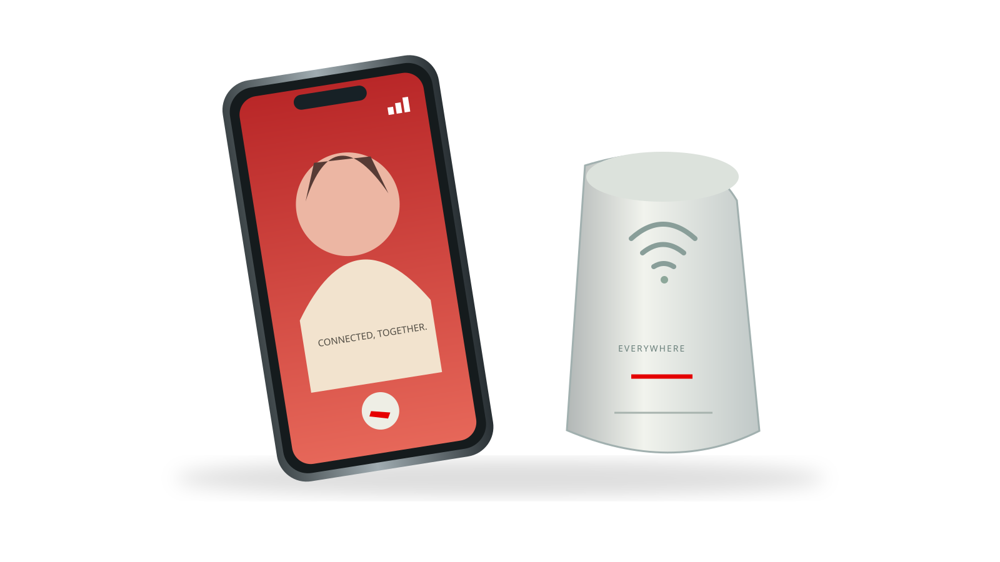

“视频接通的时候，
距离就小了一点。”
虚构人物 / 第一次独立使用视频通话
是手机里的第一次视频通话，是不再被流量术语挡住的套餐选择，是一家人各自在忙，却随时可以说上一句话的日常。
CONNECTIONS FOR EVERYDAY LIFE
从真实的通信任务出发，读懂一套固定概念方案。不是价格表，也不触发任何套餐办理。

YOUR CONNECTION STUDY
为移动中的地图、消息和轻量视频，理解流量与通话如何组合。
固定方案示例，不是实际套餐、报价、网络覆盖、速率保证或运营商服务。
DIGITAL CONNECTION SUPPORT
仅展示虚构数字支持资料，不查询覆盖或定位。
虚构人物 / 第一次独立使用视频通话
虚构人物 / 家庭多设备连接
2 篇虚构数字连接故事